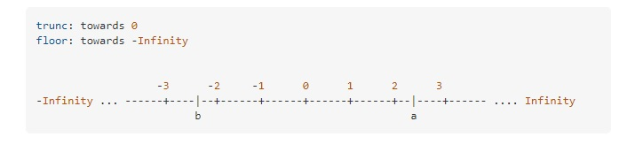
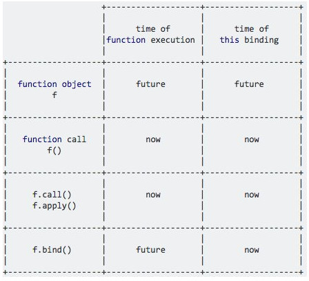

DOM API and event fundamentals
| Code |
Description |
The DOM is not part of Javascript, It is part of the JavaScript Web APIs, web APIs are libraries we can access from our JavaScript code
JavaScript uses inline css, on the html page rather than manipulate the css document |
What's the DOM and DOM Manipulation |
window.pageYOffset | window.pageYOffset Old way to find How far top of the window is / how far we
have scrolled from the top
window.scrollX, window.scrollY are the new ways that replaced window.pageYOffset and window.pageXOffset
console.log('Current Scroll (X/Y)', window.scrollX, window.scrollY);
element.offsetTop, How far the element is from the top
let find_All_dimensions = element.getBoundingClientRect(); find out all
dimensions
let width = window.innerWidth;
let height = window.innerHeight;
document.documentElement.clientHeight,
document.documentElement.clientWidth
|
Find out dimensions in relation to window and elements / top of page |
We can think of .closest as the opposite to the querySelector, as the querySelector with go down the tree searching children till
it finds the element we select .closest will go up the tree till it finds a match on the parents.
h1.closest('.header').style.background = 'var(--gradient-secondary)'; // selects the closest element to the class reference
h1.closest('h1').style.background = 'var(--gradient-primary)'; will also select itself
.closest in action, for eventDelegation.
tabsContainer.addEventListener('click', function (e) {
const clicked = e.target.closest('.operations__tab');
console.log(clicked);
// Guard clause
if (!clicked) return;
clicked.classList.add('operations__tab--active');
});
the guard clause is a newer way of writing
if(clicked){
// run this code
}
This prevents errors in the console when the element doesn't exist etc.
|
The '.closest' method |
1. Add the event listener to a common parent element
2. Determine what element originated the event
document.querySelector('.nav__links').addEventListener('click', function (e) {
console.log(e.target);
if (e.target.classList.contains('nav__link')) {
e.preventDefault();
const id = e.target.getAttribute('href');
document.querySelector(id).scrollIntoView({ behavior: 'smooth' });
}
});
This is a lot more efficient than adding the same function / event handler to multiple elements.
We add the event listener on the parent and then select the children based on a condition that the target meets.
This is called the "matching strategy".
This is needed for elements that are not yet included on the page when it loads (ones added with Javascript).
And this how we would addEventListeners to them
|
Event delegation
The strategy for EventListener. |
window.addEventListener('scroll', navScroll); It is just scroll for the event
listener.
< div onscroll="myFunction()"></div>
object.onscroll = function(){myScript};
resize works the same
window.addEventListener('resize', navresize); It is just resize for the event
listener.
|
Get some thing to happen on Scroll, Scroll events |
| const kiddyArray = Array.from(%Element%.children); |
Create and array from all of an elements child items |
| The simplest method to trigger CSS animations is by adding or removing a class - |
Starting an animation in Javascript |
classList
Use add() and remove() to add CSS classes to and remove CSS classes from the class list
of an element.
div.classList.remove('block','red');
div.classList.add('info','visible','block');
div.classList.replace('info','warning');
div.classList.toggle('on');
|
How to add or remove classes
Using "classList" , you can add or remove a class without affecting
any others the element may have.
But if you assign "className", it will wipe out any existing classes while adding the
new one (or if you assign an empty string it will wipe out all of them).
Assigning "className" can be a convenience for cases where you are certain no other
classes will be used on the element,
I would normally use the "classList" methods exclusively.
When we need to change multiple styles on the page for one element, it is best to add a class then import the styles from this class
and add/remove when its needed, Rather than writing lots of code.
|
li.getAttribute('href'); // returns the value of the href
li.setAttribute('href', 'https://google.com'); // sets the href (adds attributes)
li.hasAttribute('name') // returns bool
In JavaScript, you can use the setAttribute() method to define attributes to an element.
Using the same method, you can override the !important property of an element.
ele.setAttribute ('style', 'display: block !important;');
|
Get,set, remove attributes |
Select the Parent Element.
Use one of the firstChild, childNodes.length, children.length property to find whether
element has child or not.
hasChildNodes() method can also be used to find the child of the parent node. |
How to check if an element has any children in JavaScript ? |
element.children returns only elements as HTMLCollection, and is easier
for selecting elements, you will need to convert to array to run forEach and
higher order array function
element.previousElementSibling
element.nextElementSibling
element.firstElementChild;
element.lastElementChild;
return lines breaks as nodes and also comments
element.childNodes
element.firstChild;
element.lastChild;
z-index will always be higher on a parent element, you will have to make it a
sibling for z-index to take effect, this is crucial when making a mobile
submenu!
|
Sibling Selection / DOM traversal |
Going downwards: child
console.log(h1.querySelectorAll('.highlight'));
console.log(h1.childNodes); // gets everything
console.log(h1.children); // only direct children elements
console.log((h1.firstElementChild.style.color = 'red'));
console.log((h1.lastElementChild.style.color = 'yellow'));
Going upwards: parents
console.log(h1.parentNode);
console.log(h1.parentElement);
Going sideways: siblings
console.log(h1.previousElementSibling);
console.log(h1.nextElementSibling);
console.log(h1.previousSibling);
console.log(h1.nextSibling);
Get all siblings (select the parent element then all children)
console.log(h1.parentElement.children); |
Sibling Selection / DOM traversal |
targetElement.insertAdjacentElement(position, element);
position
A DOMString representing the position relative to the targetElement; must match (case-insensitively) one of the following strings:
'beforebegin': Before the targetElement itself.
'afterbegin': Just inside the targetElement, before its first child.
'beforeend': Just inside the targetElement, after its last child.
'afterend': After the targetElement itself.
element
The element to be inserted into the tree.
beforebegin
<p>
afterbegin
foo
beforeend
</p>
afterend
Note: The beforebegin and afterend positions work only if the node is in a tree and has an element parent.
|
The insertAdjacentElement() method of the Element interface inserts a given element node at a given position relative to the element it is invoked upon. |
const mobileListItems = Array.from(mobile_ul.children);
const allSlides = [...document.querySelectorAll('carousel__item')]; // using the
spread operator;
|
Convert HTMLCollection to an Array |
var elt = document.getElementById('foo');
console.log(elt.nodeName);
Note that nodeName returns the element name capitalized
and without the angle brackets,
which means that if you want to check if an
element is an <div> element you could do it as follows:
elt.nodeName == "DIV"
|
How can I determine the type of an HTML element in JavaScript?
nodeName is the attribute you are looking for. check example on left
|
textContent and innerHTML are similar, but
-
innerHTML will return everything HTML tags included,
-
textContent will just return the text
|
textContent VS innerHTML
|
| In an eventHandler the 'this' element always points to the element which the handler was attached to |
The 'this' keyword |
The mouseover / mouseout event triggers when the mouse pointer enters the
parent element, and its child elements.
The mouseenter / mouseleave event is only triggered when the mouse pointer
enters the parent element.
Every time you enter a child its classified as you going "mouseout" when you come out of
the child element you are back "mouseover" |
Difference between mouseenter/mouseleave & mouseover/mouseout . |
auxclick |
blur |
click |
dblclick |
compositionend |
compositionstart |
compositionupdate
contextmenu |
copy |
cut |
paste |
error |
focus |
focusin |
focusout |
fullscreenchange |
fullscreenerror |
keydown |
keypress |
keyup |
mousedown |
mouseenter |
mouseleave |
mousemove |
mouseout |
mouseover |
mouseup |
overflow |
scroll |
select |
touchcancel |
touchend |
touchmove |
touchstart |
wheel |
Events |
if (e.key === "Escape" && !overlay.classList.contains('hidden'))
closeModal();
// is the same as
if (e.key === "Escape") {
if (!overlay.classList.contains('hidden')) closeModal();
}
keyboard/press events are global and are added to document.addEventListener('keydown', function)
keypress, - fires continuously when we press the button, so we usually use either keydown or keyup but mostly keydown
Listening to 'submit' on a form will handle click and enter although enter also counts as a click.
|
Handling an "Esc" Keypress Event
We should add an escape keydown to close a modal as well as a click |
| console.log(getComputedStyle(message).width); |
Get computed style of any element
|
Old way For removing one element:
var elem = document.getElementById("yourid");
elem.parentElement.removeChild(elem);
For removing all the elements with for example a certain class name:
var list = document.getElementsByClassName("yourclassname");
for(var i = list.length - 1; 0 <= i; i--)
if(list[i] && list[i].parentElement)
list[i].parentElement.removeChild(list[i]);
New way that replaces having to select parents. (not IE compatible)
document.querySelector('.btn--close-cookie').remove();
});
|
Removing elements |
We call them like this in JavaScript
icon.style.fill =
window.getComputedStyle(document.documentElement).getPropertyValue('--colorBlue');
here is how we can change their value
document.documentElement.style.setProperty('--color-font-general', '#000');
Note that the value returned has the leading space, so you would get " #336699" instead
of "#336699".
This matters if you are trying to check the value (it may not match
because of that leading space, so consider trimming it before checking).
|
Calling Custom CSS variables |
getComputedStyle can pull style info from pseudo-elements (such as ::after, ::before, ::marker,
var h3 = document.querySelector('h3');
var result = getComputedStyle(h3, ':after').content;
|
Using Window.getComputedStyle() to get the value of a pseudoElement |
links with a href of "#" will automatically make the page jump to the top when clicked.
We can prevent this default behavior with javascript, click handler, e.preventDefault(); |
Custom links with a href of "#" or just custom links |
document.getElementsByTagName, & document.getElementsByClassName return a HTMLCollection.
This is different to a nodelist as it updates itself automatically when if we delete one its nodes from the DOM
Live vs. Static NodeLists
Although they are both considered NodeLists, there are 2 varieties of NodeList: live and static.
Live NodeLists
In some cases, the NodeList is live, which means that changes in the DOM automatically update the collection.
For example, Node.childNodes is live:
const parent = document.getElementById('parent');
let child_nodes = parent.childNodes;
Static NodeLists
In other cases, the NodeList is static, where any changes in the DOM does not affect the content of the collection.
The ubiquitous document.querySelectorAll() method returns a static NodeList.
It's good to keep this distinction in mind when you choose how to iterate over the items in the NodeList,
and whether you should cache the list's length.
|
Live vs. Static NodeLists
document.getElementsByTagName / document.getElementsByClassName VS querySelector
|
console.log(logo.src); // http://localhost/myProject/images/abc.jpg
console.log(logo.getAttribute('src')); // "images/abc.jpg"
|
get relative version of image/link vs get full path |
Window.scrollTo()
Window.scrollTo() method scrolls to a particular set of coordinates in the document.
notice how we need to selected the whole page (document.documentElement) to do the scroll to on.
We need to specify left, top and behavior, and if we pass an object with options (required for smooth scroll) we should use polyfill as this is not ie10 or safari compatible
window.scrollTo({
left: s1coords.left + window.scrollX,
top: s1coords.top + window.scrollY,
behavior: 'smooth',
});
Element.scrollIntoView()
Element.scrollIntoView() method scrolls the element on which it's called into the Viewport of the browser window.
This will jump to the area with specify,
use pollyfill if we are passing the object settings into the method. (which is required for smooth scrolling).
section1.scrollIntoView({ behavior: 'smooth' });
other options
// block: "start" / "center" / "nearest"
// inline:"nearest" / "center" / "nearest"
|
Implementing smooth scrolling |
we need to use dataset for the data part and camelCase for the bit after, data-version-number=""
console.log(logo.dataset.versionNumber); |
How to get the value from the HTML "data-" attribute. |
|
Data Structures
https://developer.mozilla.org/en-US/docs/Web/JavaScript/Reference/Global_Objects/Array
| Code |
Description |
slice -> slices a chunk from an array, but does NOT mutate the original.
slice example
const animals = ['ant', 'bison', 'camel', 'duck', 'elephant'];
console.log(animals.slice(2));
// expected output: Array ["camel", "duck", "elephant"]
console.log(animals.slice(2, 4));
// expected output: Array ["camel", "duck"]
console.log(animals.slice(-2));
// expected output: Array ["duck", "elephant"]
console.log(animals.slice(2, -1));
// expected output: Array ["camel", "duck"]
splice -> is mainly used for deleting elements from an array as it mutate the original array when we use it.
splice example
const months = ['Jan', 'March', 'April', 'June'];
months.splice(1, 0, 'Feb');
// inserts at index 1
console.log(months);
// expected output: Array ["Jan", "Feb", "March", "April", "June"]
months.splice(4, 1, 'May');
// replaces 1 element at index 4
console.log(months);
// expected output: Array ["Jan", "Feb", "March", "April", "May"]
|
Slice vs Splice (Arrays)
|
The concat() method is used to merge two or more arrays.
This method does not change the existing arrays, but instead returns a new array.
const array1 = ['a', 'b', 'c'];
const array2 = ['d', 'e', 'f'];
const array3 = array1.concat(array2);
console.log(array3);
// expected output: Array ["a", "b", "c", "d", "e", "f"]
|
array.concat() (Arrays)
|
map, filter, reduce, find -> array methods that work like the forEach method.
- map - returns a new array containing the results of applying an operation on all original array elements.
if we want a new array the same length as the original we use map
- filter - returns a new array containing the array elements that passed a specified test condition.
- reduce - boils ("reduces") all array elements down to one single value (eg. adding all elements together) uses acc + current
- find
map
forEach mutates the original array whilst .map creates a new one.
Pass a function to Array.map
_generateMarkUp() {
return this._data.map(this._generateMarkUpPreview).join('');
}
Use Functions to generate HTML markup when possible!
_generateMarkUpPreview() {
return `
<li class="preview">
< a class="preview__link" href="#23456">
<figure class="preview__fig">
< img src="src/img/test-1.jpg" alt="Test" />
</figure>
</a>
</li>`;
}
reduce
The initial value is the value of the total parameter when the reduction starts.
You set the initial value by adding a comma followed by your initial value inside the parentheses but after the curly braces.
const average = euros.reduce((total, amount, index, array) => {
total += amount
return total/array.length
}, 0);
By omitting the initial value ",0 )", the total will default to the first amount in the array.
(advanced reduce methodology w destructuring)
const { deposits, withdrawals } = accounts
.flatMap(account => account.movements)
.reduce(
(accu, cur) => {
// cur > 0 ? (accu.deposits += cur) : (accu.withdrawals += cur);
// return accu;
accu[cur > 0 ? 'deposits' : 'withdrawals'] += cur; // dynamic conditional object call
return accu;
},
{ deposits: 0, withdrawals: 0 }
);
console.log(deposits, withdrawals);
.find / .filter
array.filter and array.find are pretty similar but the key difference is that
- .filter returns all elements that meet the specified condition and returns a new array
- .find method only returns the first one and returns the element itself (not a new array).
We can use the .find method to find a object in an array of objects when the object meets a certain condition.
const accountJess = accounts.find(acc => acc.owner === 'Jessica Davis');
console.log(accountJess);
do NOT chain methods that mutate the original array. eg splice, reverse.
Also try to minimize the amount of chaining at any possible opportunity especially on big arrays.
|
Data Transformations: map, filter, reduce (Arrays)
|
Array.flat()
Using Flat() method in Javascript
It concatenates all the elements of the given multidimensional array, and flats upto the specified depth.
By default, the depth limit is 1. It can be 1 to Infinity.
array.flat() only goes one layer deep when flattening the array.
array.flat(2 will go 2 layers deep.
flatMap()
flatMap() truly does only go 1 layer deep and if we do need to go any deeper then we will need to use the flat method.
Flat map first runs the map function then flatten the array after.
//// Flat map (maps first and then flattens after)
let arr1 = [1, 2, 3, 4];
arr1.map(x => [x * 2]);
// [[2], [4], [6], [8]]
arr1.flatMap(x => [x * 2]);
// [2, 4, 6, 8]
// only one level is flattened
arr1.flatMap(x => [[x * 2]]);
// [[2], [4], [6], [8]]
Array.from also takes a .map as the second argument.
labelBalance.addEventListener('click', function () {
const movementsUI = Array.from(
document.querySelectorAll('.movements__value'),
el => el.textContent.replace('£', '')
);
console.log(movementsUI);
});
Another way we could have done this is with the spread operator but then we would have had to use the map method separately.
const movementsUI = [...document.querySelectorAll('.movements__value')]
|
flat / flatMap / Array.from (Arrays) |
- array.findIndex returns the index
- array.find will return just the element itself.
They are quite similar to the array.indexOf and array.index methods but the only difference being
that we enter complex conditions for the call back function to search for and It will return the
element that meets the specified condition that we set.
const index = accounts.findIndex(function (acc) {
return acc.username === currentAccount.username;
});
console.log(accounts[index]);
const receiverAccount = accounts.find(
acc => acc.username === inputTransferTo.value
);
|
array.findIndex & array.find Methods |
/// INCLUDES (returns boolean)
console.log(test.includes(450));
// SOME true if any/some elements in the array meet our CONDITION
console.log(test.some(el => el === 70));
// EVERY true if all elements in the array meet our CONDITION
console.log(test.every(el => el > 0));
// EVERY with a separate callback
const deposit = mov => mov > 0;
console.log(test.every(deposit));
More array methods and also passing a separate callback function rather than writing it inside the method.
(Good for the DRY principle) if we keep writing the same code.
|
.includes / .some / .every (Arrays)
|
array.Sort method
- The default sort order is ascending, built upon converting the elements into strings, then comparing their sequences of UTF-16 code units values.
- Converts everything to strings then sorts after.
- mutates the original array. and is good for sorting an array of numbers. Takes a callback function.
movements.sort((a, b) => a - b);
//return < 0, A, B (keep order)
//return > 0, B, B (switch order)
//// 2 ways to sort ascending movements.sort((a, b) => {
if (a > b) return 1;
if (a < b) return -1;
});
movements.sort((a, b) => a - b); // a will always return 1 same as above but optimized and works for number.
|
array.Sort |
arr.at is a new es2022 method that makes it easier to get the last element of an array
arr[arr.length - 1]; // old way
arr.slice(-1)[0]; // 2nd old way
arr.at(-1); // new way!
The new at method also works on strings!
|
The new at Method(Arrays)
|
const x = new Array(7); // creates a blank array with 7 elements.
x.fill(1, 3, 5); // adds 1,s in position 3 and 4
console.log(x);
- We can the call the new .fill method to fill it all with this one element.
- (.fill is similar to slice) as we can also specify where the fill starts from and where it ends.
Array.from gives us the same result as when we use the new Array(7)
In this one-liner, the first argument of the from method is the object we want to create an array from.
In this case, we are creating an empty object with a length property set to 10.
The second argument is a function that fills the array with whatever the result of our function is.
const x = Array.from({ length: 7 }, () => 1);
console.log(y)
const y = Array.from({ length: 7 }, (cur, i) => i + 1);
console.log(y)
const z = Array.from({ length: 7 }, (_, i) => i + 1);
console.log(z)
use the underscore to show other programmers the current is not needed.
|
More Ways of Creating and Filling Arrays
|
Keep this technique of creating an array of exceptions in mind.
// this is a nice title -> This Is a Nice Title
const convertTitleCase = function (title) {
const capitilize = str => str[0].toUpperCase() + str.slice(1); // check out the missing ( brackets )
const exceptions = ['a', 'an', 'and', 'the', 'but', 'or', 'on', 'in', 'with'];
const titleCase = title
.toLowerCase()
.split(' ')
.map(word => (exceptions.includes(word) ? word : capitilize(word)))
.join(' ');
return capitilize(titleCase);
};
console.log(convertTitleCase('this is a nice title'));
|
Keep the technique of creating an array of exceptions in mind.
Here we use it to create a function that converts all items in the Array to 'Proper case' if they are not included in the exception array.
|
Objects that can be used in for..of are called iterable.
- Technically, iterables must implement the method named Symbol.iterator.
- The result of obj[Symbol.iterator]() is called an iterator. It handles further iteration process.
- An iterator must have the method named next() that returns an object {done: Boolean, value: any}, here done:true denotes the end of the iteration process, otherwise the value is the next value.
- The Symbol.iterator method is called automatically by for..of, but we also can do it directly.
- Built-in iterables like strings or arrays, also implement Symbol.iterator.
- String iterator knows about surrogate pairs.
Objects that have indexed properties and length are called array-like. Such objects may also have other properties and methods, but lack the built-in methods of arrays.
If we look inside the specification - we’ll see that most built-in methods assume that they work with iterables or array-likes instead of “real” arrays, because that’s more abstract.
Array.from(obj[, mapFn, thisArg]) makes a real Array from an iterable or array-like obj, and we can then use array methods on it. The optional arguments mapFn and thisArg allow us to apply a function to each item.
EXAMPLE
Create an array with random value (min, max) length
let randint = (min, max) => Math.floor(Math.random() * (max - min + 1)) + min;
create_random = {
min: -1,
max: 90,
length: 100,
};
create_random[Symbol.iterator] = function() {
return {
start: 0,
min: this.min,
max: this.max,
length: this.length,
next(){
this.start++;
return this.start < this.length ? {done:false, value:randint(this.min, this.max)} : {done:true};
}
};
};
let array=Array.from(create_random); console.log(array);
|
Iterables: What is iterable?
|
while loop should be used when we do not know the amount of times we need to loop,
for loop we use when we know how many times we need to loop.
forEach is the new version of the for (const var of v) loop
But the big difference is that you can NOT break out of a forEach loop! or continue.
for (const m of movements) {
if (m > 0) {
console.log(`You deposited ${m}`);
}
else {
console.log(`You withdrew ${Math.abs(m)}`);
}
}
movements.forEach(function (m) {
if (m > 0) {
console.log(`You deposited ${m}`)
} else {
console.log(`You withdrew ${Math.abs(m)}`)
}
});
how to get index with the for of loop
for (const [i, m] of movements.entries()) {
if (m > 0) {
console.log(`m ${i}: You deposited ${m}`);
} else {
console.log(`m ${i}: You withdrew ${Math.abs(m)}`);
}
}
how to get index with the forEach loop
movements.forEach(function (m, i) {
if (m > 0) {
console.log(`m ${i}: You deposited ${m}`);
} else {
console.log(`m ${i}: You withdrew ${Math.abs(m)}`)
}
});
The difference between for...of and for...in
Both for...in and for...of statements iterate over something. The main difference between them is in what they iterate over.
- The for...in statement iterates over the enumerable properties of an object. (keys)
- The for...of statement iterates over values that the iterable object defines to be iterated over. (values)
The following example shows the difference between a for...of loop and a for...in loop when used with an Array.
Object.prototype.objCustom = function() {};
Array.prototype.arrCustom = function() {};
const iterable = [3, 5, 7];
iterable.foo = 'hello';
for (const i in iterable) {
console.log(i); // logs "0", "1", "2", "foo", "arrCustom", "objCustom"
}
for (const i in iterable) {
if (iterable.hasOwnProperty(i)) {
console.log(i); // logs "0", "1", "2", "foo"
}
}
for (const i of iterable) {
console.log(i); // logs 3, 5, 7
}
Iterating over a DOM collection
Iterating over DOM collections like NodeList:
// Note: This will only work in platforms that have implemented NodeList.prototype[Symbol.iterator]
const articleParagraphs = document.querySelectorAll('article > p');
for (const paragraph of articleParagraphs) {
paragraph.classList.add('read');
}
|
which loop to use |
Destructuring Assignment
let a,b;
[a,b] = [100,200];
Rest Pattern
[a,b,c, ...test] = [100,200,300,400,500];
Rest Pattern
[a,b,c, ...test] = [100,200,300,400,500];
using the rest pattern on objects
({a , b} = { a: 100, b: 200, c:300, d:400, e:500 });
({a , b, ...rest} = { a: 100, b: 200, c:300, d:400, e:500 });
Array Destructuring
const people = ['Billy', 'Jo', 'Shane'];
const [person1, person2, person3] = people;
console.log(person1, person2, person3);
Parse array returned from function
function getPeople(){
return ['Jon', 'Sam', 'Ted'];
}
let name1, name2, name3;
[name1, name2, name3 ] = getPeople();
console.log(name1, name2, name3);
Object Destructuring
const person = {
name:'Jon Doe',
age: 44,
city: 'London',
gender: 'Male',
sayHello: function(){
return 'Hello';
}
}
old ES5
const testName = person.name,
testAge = person.age,
testHello = person.sayHello();
console.log(testName,testAge);
New ES6 Destructuring
const {name, age, city, sayHello} = person;
console.log(name, age, city, sayHello());
Destructuring nested objects
const openingHours = {
sat: {
open: 0,
close: 24,
},
};
const {
sat: {open, close}
} = openingHours;
console.log(open, close);
This is the syntax we would use /// only works with the same name
Destructuring the parameters in an object method call
const restaurant = {
orderDelivery: function ({ starterIndex, mainIndex, time, address }) {
console.log(Order received! ${this.starterMenu[starterIndex]} and ${this.mainMenu[mainIndex]} will be delivered to ${address} at ${time}.`);
}
};
The names MUST be the same but notice how it doesn't matter which order the parameter are call, JavaScript works it out for us and puts them in the correct order.
Call them like this
restaurant.orderDelivery({
time: '22:30',
address: 'Villa da sol',
mainIndex: 2,
starterIndex: 2,
});
To mutate an object you will need to wrap it in () like this
({ a ,b } = obj);
nested array destructuring
const nested = [2, 4, [5, 6] ];
const [,i , [,j]] = nested;
nested Object destructuring
only works when the name of the variable is exactly the same as the property names that we want to retrieve from the object. (Handy when getting data from API)
let recipe = data.data.recipe; // old way
let {recipe} = data.data; // new way with destructuring
We do not need to specify empty spaces or order like we with arrays (by using the comma,) as the order does not matter with object destructuring.
How to destructure an object (but give the variables new names)
const {name : theNewName, openingHours: theNewOpeningHours, categories: typesOfFood} = restaurant;
the same but with adding default values just incase anything returns undefined.
const {
menu = [], openingHours
} = restaurant;
|
Destructuring |
The spread ... operator is similar to destructuring, as it also helps get elements out of arrays (literally).
The spread operator is used where we would other wise use values separated by a comma.
The rest operator does the opposite of the spread operator.
The rest packs things up to a new array whilst the spread spreads them out.
The rest operator is used where we would otherwise use variable names separated by commas
This is how we know what's being used and when to use spread or rest.
SPREAD, because on RIGHT side of =
const arr = [1, 2, ...[3, 4]];
REST because on LEFT side of =
const [a, b, ...other] = [1, 2, 3, 4, 5];
The rest item must be the last element in the array else it will throw an error.
Use ...spread when we don't know how many parameters are being put into a function from an array.
|
The difference between the rest and the spread operator |
Create a Set
const set1 = new Set();
Add values to Set
set1.add(100);
set1.add('A string');
set1.add({name: 'Jon'});
set1.add(true);
set1.add(100); // this will not be added as there is already one in the set, each set value must be unique
a different way to add values to Set
const set2 = new Set([1, true, 'String']);
console.log(set2);
Get count
set1.size;
check for values
set1.has(100); // true
set1.has(50 + 50); // true
Delete from set
set1.delete(100);
ITERATING THROUGH SETS
for of loop
for (const item of set1) {
console.log(item);
}
forEach
set1.forEach((key) => {
console.log(key);
});
Convert SET TO ARRAY
const setArr = Array.from(set1);
- Sets are like arrays, but there items must be unique and any non unique items will be removed from the array. There order is also irrelevant unlike the array.
- Store unique values of any type, sets are not key value pairs they are just single value
- we can never retrieve items out of a set! we should use an array if we want to do this, although sets are iterable.
- Sets are just for storing data. We can only check if an item exists inside of the set with the .has method
- We use .size rather than .length to find out how many items we have inside of the set.
- it also uses a .has method which is similar to the .includes method that we use on arrays.
- A set can be any iterable item, so we can also use them with strings.
- The main use case for sets would be to remove duplicate items from an array.
|
SETS
|
Create Map
const map1 = new Map();
Set keys
const key1 = 'some string',
key2 = {},
key3 = function(){};
Set map values by key
map1.set(key1, 'Value of key1'); // 'some string' is now the key
map1.set(key2, 'Value of key2'); // {} empty object, is now the key
map1.set(key3, 'Value of key3'); // empty function is now the key
Get Values by key
console.log(map1.get(key1), map1.get(key2), map1.get(key3));
Count Values
console.log(map1.size); // returns 3
ITERATING MAPS
Loop using for...of to get keys and values
for(let [key, value] of map1){
console.log(`${key} = ${value}`);
}
Iterate keys only
for(let key of map1.keys()){
console.log(key);
}
Iterate value only
for(let value of map1.values()){
console.log(value);
}
Loop with a forEach
map1.forEach((value,key) =>{
console.log(`${key} = ${value} `);
});
CONVERT an array of the key value pairs
const keyValArr = Array.from(map1);
console.log(keyValArr);
CONVERT an array of the keys
const keyArr = Array.from(map1.keys());
console.log(keyArr);
const valueArr = Array.from(map1.values());
console.log(valueArr);
|
MAPS
key:value pairs, we can use ANY type as a key or a value. |
Create symbol
const sym1 = Symbol();
const sym2 = Symbol('sym2');
// console.log(typeof(sym2));
Returns false as no two symbols can be the same
// console.log(Symbol('123') === Symbol('123'));
Unique Object Keys
const KEY1 = Symbol();
const KEY2 = Symbol('sym2');
const myObj = {};
this will not work as a symbol must use square brackets
// myObj.KEY1 = 'Prop1';
// you will have to use square brackets like this
myObj[KEY1] = 'Prop1';
myObj[KEY2] = 'Prop2';
myObj.key3 = 'Prop3';
myObj.key4 = 'Prop4';
// console.log(myObj[KEY1]);
// console.log(myObj[KEY2]);
// symbols are not enumerable in for....in (they wont show up in the loop!)
// for(let i in myObj){
// console.log(`${i}: ${myObj[i]}`);
// }
// Symbols are ignored by JSON.stringify
console.log(JSON.stringify({key: 'prop'}));
console.log(JSON.stringify({[Symbol('test')]: 'prop'})); // just shows as an empty object.
|
Symbol() - Symbols
For Unique Object Keys |
Use arrays most of the time over sets but use a set if you need to remove duplicates from arrays or if you need to work with unique values
Use objects when you need to include functions, (this can not be done with maps) or when working with JSON.
Use maps when you want to use keys that are NOT strings or when you simply need to map key to values. |
When to use arrays vs sets && maps vs objects |
|
Numbers, Dates, Intl and Timers
| Code |
Description |
const now = new Date();
- The Date object has lots a built in functions.
- Always use getFullYear(); Do not ever use getYear()
- but for other getters we do not inlude 'full eg. 'getMonth()
- Dates also have setters, setMonth() etc.
- We can get the timestamp / number of miliseconds passed since 1970 by using Date.now();
Display formatted Date example/u>
const date = new Date(acc.movementsDates[i]);
// const now = new Date();
const day = `${date.getDate()}`.padStart(2, 0); // adds 0 to 1 digit months
const month = `${date.getMonth() + 1}`.padStart(2, 0);
const year = date.getFullYear();
const hours = date.getHours();
const minutes = date.getMinutes();
const displayDate = `${day}/${month}/${year}`;
moment.js is a popular free JavaScript library for calculating complex date equations
Calculate days passed
const formatMovementDate = function (date) {
const calcDaysPassed = (date1, date2) => Math.round(Math.abs(date2 - date1) / (1000 * 60 * 60 * 24));
const daysPassed = calcDaysPassed(new Date(), date);
console.log(daysPassed);
if (daysPassed === 0) return 'Today';
if (daysPassed === 1) return 'Yesterday';
if (daysPassed <= 7) return `${daysPassed} days ago`;
else {
const day = `${date.getDate()}`.padStart(2, 0); // adds 0 to 1 digit months
const month = `${date.getMonth() + 1}`.padStart(2, 0);
const year = date.getFullYear();
return `${day}/${month}/${year}`;
}
};
Int API (internationalization)
labelDate.textContent = new Intl.DateTimeFormat('en-US').format(now);
returns the format in any language that we set it to
const now = new Date();
const options = {
day: 'long',
month: 'short',
year: 'numeric',
hour: 'numeric',
minute: 'numeric',
};
const locale = navigator.language;
labelDate.textContent = new Intl.DateTimeFormat('en-US', options).format(now);
// or to set to local
labelDate.textContent = new Intl.DateTimeFormat(locale, options).format(now);
We can do the same with numbers
const number = 3445349.34;
const options = {
style: 'percent',
unit: 'mph',
};
console.log(new Intl.NumberFormat('en-US', options));
|
Creating Dates
MDN |
Always use isFinite rather than isNAN to check if something is or is not a number, this is because isNaN produces some strange results
console.log(Number.isNaN(20)); // false
console.log(Number.isNaN('20')); // false
console.log(Number.isNaN(+'20X')); // true
console.log(Number.isNaN(23 / 0)); // false (infinity)
console.log(Number.isFinite(20)); true
console.log(Number.isFinite('20')); false
console.log(Number.isFinite(+'20X')); false
console.log(Number.isFinite(23 / 0)); false
// for ints with no float
console.log(Number.isInteger('44'));
console.log(Number.isInteger(44));
- You can NOT do really precise scientific or financial calculation in JavaScript due to it using binary base 2. eg. 0.1 + 0.2 = 0.30000000000004
- All numbers convert to floats, using the + sign on a string will convert it to a number
make something run every nth time
if(i % 3 === 0) {
}
Math.trunc rounds down a number to an integer towards 0
while Math.floor rounds down a number to an integer towards -Infinity.
As illustrated with the following number line, the direction will be the same for a positive number while for a negative number, the directions will be the opposite.

When rounding decimals .toFixed will always return a string not a decimal,
use the + sign if we want to convert it back to a number
console.log(+(2.5).toFixed(0));
Number provides a name space for parseFloat and parseInt.
Although they are global functions it is recommended that we call the on the Number object.
console.log(Number.parseInt('30px', 10)); // always use the 10 for base 10 standard numbers to avoid bugs.
console.log(Number.parseInt('010100001px', 2)); // use 2 if we are working with binary.
console.log(Number.parseFloat('2.5rem')); // 2.5
console.log(Number.parseInt('2.5rem')); // 2
Number.ParseFloat // should be the go to when getting values from CSS that include px, rem and wanting to strip it out.
|
Converting and Checking Numbers |
- Any number that is bigger than Number.MAX_SAFE_INTEGER; needs a big int else we will lose precision. These are unsafe numbers.
- BigInt is used by either adding a n onto the end of the number like this 3143104308929048243242n
- or by using the BigInt(90843043) constructor function.
- We can NOT add a bigInt to a normal number
- We can NOT use math functions on a BigInt
- BigInt was added in es2020
|
Working with BigInt |
Pass parameters
setTimeout( (ing1, ing2) => console.log(`here is your pizza with ${ing1} and ${ing2}`),
3000,
'olives',
'spinach'
);
We can cancel as timer or interval before it has happened, but we will need to name it.
const cancelMe = setTimeout((ing1, ing2) => console.log(`here is your pizza with ${ing1} and ${ing2}`),
3000,
...ingredients
);
if (ingredients.includes('bacon')) clearTimeout(cancelMe);
We don't need to call the variable, it still runs automatically. |
Pass parameters to setTimeout and also how to cancel a timeout or interval |
|
Functions
| Code |
Description |
The difference between an expression and a statement is that an expression produces a value.
A statement does not produce a value, it just performs some value. They are like full sentences that describe what is going on.
`template string literals` always expect an expression, so we can use a ternary operation, but we can not use an if statement.
Operator and expression always produce a value.
|
Statements and Expressions |
function declaration
function calcAge1(birthYear){
return 2021 - birthYear;
}
const age1 = calcAge1(1989);
function expression
const calcAge2 = function (birthYear){
return 2021 - birthYear;
}
const age2 = calcAge2(1989);
The arrow function is also a function expression.
Const calcAge3 = birthYear => 2021 - birthYear;
The main difference is that function declarations can be called before they are defined in the code.
It comes down to personal preference on which style you choose to use.
|
function declaration vs function expression |
You can create a function to return an array when you want to return more than one thing.
// ES6 method in an object.
order(starterIndex, mainIndex) {
return [this.starterMenu[starterIndex], this.mainMenu[mainIndex]];
},
|
Make a function return more than one thing by returning an array |
// Before, using ES5...
function greetES5(message, to) {
// Test parameter values in the function body, specifying a default
to = to || 'DOM';
// OR if (typeof to === undefined) { to = 'DOM'; }
// OR if (arguments.length === 1) { to = 'DOM'; }
ChromeSamples.log(message + ', ' + to);
}
greetES5('Good morning');
greetES5('Sup', 'CSS');
// After using ES2015/ES6...
// Define default parameter values in the function head
function greet(message, to = 'DOM') {
ChromeSamples.log(message + ', ' + to);
}
greet('Good morning');
greet('Sup', 'CSS');
it's always best to pass data into a function rather that have it in the global scope
const displayMovements = function(movements){}
displayMovements(account1.movements)
| Default parameters in functions ES5 & ES6 way |
- Arrow functions allow you to have an implicit return: values are returned without having to use the return keyword.
- It works when there is a on-line statement in the function body:
- In a arrow function the body is only automatically returns when we do NOT have the curly brackets.
- If we have included the curly brackets then we also need to include the return statement.
- Implicit return, but only if there is no block.
- This will result in errors when a one-liner expands to multiple lines and the programmer forgets to add a return.
- Implicit return is syntactically ambiguous. (name) => {id: name}returns the object {id: name}... right? Wrong. It returns undefined. Those braces are an explicit block. id: is a label.
|
Arrow functions |
ITERATOR EXAMPLE
function nameIterator (names){
let nextIndex = 0;
return {
next: function(){
return nextIndex < names.length ? {value: names[nextIndex++], done:false } : {done: true};
}
}
}
Create an array of names
const namesArr = ['Jack', 'Jill', 'Jon'];
Init iterator and pass in the names array
const namesTest = nameIterator(namesArr);
// returns Jack
console.log(namesTest.next().value);
// returns Jill
console.log(namesTest.next().value);
// returns Jon
console.log(namesTest.next().value);
// returns Undefined, done:true
console.log(namesTest.next().value);
Profile Iterator (good for carousel)
function profileIterator(profiles){
let nextIndex = 0;
return{
next:function(){
return nextIndex < profiles.length
?
{value: profiles[nextIndex++], done: false }
:
{value: profiles[(nextIndex++) % profiles.length], done: false}
;
}
}
}
Call it like This
const profiles = profileIterator(data); // data was an array of objects
function nextProfile(){
// has to be done this way else each item will be one click ahead. eg "${profiles.next().value.image}">
const currentProfile = profiles.next().value;
}
GENERATOR EXAMPLE
need to put the Star after the function here
for this to work!
(Works the same as iterator but is just layed out in a different style)
function* sayNames(){
yield 'Sam';
yield 'Bill';
yield 'Fred';
}
const testGenerator = sayNames();
// returns Sam
console.log(testGenerator.next().value);
// returns Bill
console.log(testGenerator.next().value);
// returns Fred
console.log(testGenerator.next().value);
// returns Undefined
console.log(testGenerator.next().value);
// ID Creator
function* CreateIds(){
let index = 0;
while(true){
yield index++;
}
}
// Will keep adding 1;
const gen = CreateIds();
// 0
console.log(gen.next().value);
// 1
console.log(gen.next().value);
// 2
|
Iterators and Generators |
They all attach this into function (or object) and the difference is in the function invocation
- Call invokes the function and allows you to pass in arguments one by one.
- Apply invokes the function and allows you to pass in arguments as an array.
- Bind returns a new function, allowing you to pass in a this array and any number of arguments.
Use .bind() when you want that function to later be called with a certain context, useful in events.
Use .call() or .apply() when you want to invoke the function immediately, and modify the context.
Call/apply call the function immediately, whereas bind returns a function that, when later executed, will have the correct context set for calling the original function.
This way you can maintain context in async callbacks and events.
Apply vs. Call vs. Bind Examples
Call
var person1 = { firstName: 'Jon', lastName: 'Kuperman'};
var person2 = {firstName: 'Kelly', lastName: 'King'};
function say(greeting) {
console.log(greeting + ' ' + this.firstName + ' ' + this.lastName);
}
say.call(person1, 'Hello'); // Hello Jon Kuperman
say.call(person2, 'Hello'); // Hello Kelly King
Apply
var person1 = {firstName: 'Jon', lastName: 'Kuperman'};
var person2 = {firstName: 'Kelly', lastName: 'King'};
function say(greeting) {
console.log(greeting + ' ' + this.firstName + ' ' + this.lastName);
}
say.apply(person1, ['Hello']); // Hello Jon Kuperman
say.apply(person2, ['Hello']); // Hello Kelly King
Bind
Example 1
var person1 = {firstName: 'Jon', lastName: 'Kuperman'};
var person2 = {firstName: 'Kelly', lastName: 'King'};
function say() {
console.log('Hello ' + this.firstName + ' ' + this.lastName);
}
var sayHelloJon = say.bind(person1);
var sayHelloKelly = say.bind(person2);
sayHelloJon(); // Hello Jon Kuperman
sayHelloKelly(); // Hello Kelly King
Example 2
var multiby2 = multiplication.bind(this,2);
Now multiby2(b) is equal to multiplication(2,b);
multiby2(3); //6
multiby2(4); //8
What if I pass both the parameters in bind?
var getSixAlways = multiplication.bind(this,3,2);
Now getSixAlways() is equal to multiplication(3,2);
getSixAlways();//6
even passing parameter returns 6; getSixAlways(12); //6
var magicMultiplication = multiplication.bind(this);
This create a new multiplication function and assigns it to magicMultiplication.
Oh no, we are hiding the multiplication functionality into magicMultiplication.
calling magicMultiplication returns a blank function b()
on execution it works fine magicMultiplication(6,5); //30
How about call and apply?
magicMultiplication.call(this,3,2); //6
magicMultiplication.apply(this,[5,2]); //10
When To Use Each?
Call and apply are pretty interchangeable. Just decide whether it’s easier to send in an array or a comma separated list of arguments.
Its good to remember which one is which by remembering that Call is for comma (separated list) and Apply is for Array.
Bind is a bit different. It returns a new function.
Call and Apply execute the current function immediately.
Bind is great for a lot of things. We can use it to curry functions like in the above example.
We can take a simple hello function and turn it into a helloJon or helloKelly.
We can also use it for events like onClick where we don’t know when they’ll be fired but we know what context we want them to have.
// we need to bind else this will point to the element that is clicked (this.options.join)
document.querySelector('.btn').addEventListener('click', poll2.registerNewAnswer.bind(poll2));
Comparison between function objects, function calls, call/apply and bind

|
.call() & .apply() vs .bind()
What do they do and which one should I use? |
Scope: the 4 types
- Global scope - > goes to the window (accessible everywhere).
- Function scope (accessible only inside the function Not Outside)
- Block scope. (only starts with es6 and only works with let and const variables, functions are also block scoped in strict mode).
- Lexical - looks to the outer function.
- One scope can only look up the scope chain, but can Never look down.
- scope has access to variable from all outer scopes.
- let and const are block scoped.
- var is scoped to the surrounding function
|
Scope and The Scope Chain |
- The "this" keyword/variable. Points to the owner of the function.
- This is NOT static. It depends on how the function is called and its value is only assigned when the function is actually called.
- Methods - this = object that is calling the method.
- Function - this = undefined. (Only in strict mode, Otherwise this = window)
- Arrow functions = this = this of the surrounding function (lexical this) arrows have no this.
- Event listener this = DOM element that the handler is attached to.
'this' does NOT point to the function itself or the variable environment.
|
The this Keyword |
First class functions is just a feature that a programming language either has or does not have. (There is no such thing in practice)
This concept is true for JavaScript as functions return a value and are objects.
They are treated as first class citizens.
Higher Order functions is an actual thing that there is in practice.
They are a function that either takes in another function (clickhandler, callback) or one that returns a function (recursive). |
First-Class function and Higher-Order Functions - What are they? |
Closure = Variable environment attached to the function, exactly as it is and was at the time of creation.
- A closure gives a function access to all of the variables of its parent function, even after that function has returned. The function keeps reference to its outer scope, which preserves the scope chain throughout time.
- A function has access to the variable environment of the execution content in which it was created.
- closure has priority over the scope chain! .. Closure has priority over all, it is like a rucksack that carrys round its the variables that were with it when it was born, even after they have moved on.
- reassigning functions creates a closure
- SetTimeout is a good example of closure. It gets access to the outer Variable environment long after it has gone from the stack.
|
Closures
What is a closure?
|
IFFE - are used when we want to execute a function once,
they used to be used for encapsulation but no so much anymore since es6 and the introduction of let, const and block scope. |
IFFEs (Immediately Invoked Function Expressions) |
|
Object Orientated Programming (OOP)
| Code |
Description |
|
|
Asynchronous JavaScript
| Code |
Description |
document.getElementById('button').addEventListener('click', loadData);
function loadData(){
//Create XHR Object
const xhr = new XMLHttpRequest();
// OPEN
//(Where we specify the type of request we want to make and the file name), the third
parameter is boolean for if we want it to be asynchronous or not;
xhr.open('GET','data.txt',true);
// new way readyState jumps straight to 4
xhr.onload = function(){
if(this.status === 200){
document.getElementById('output').innerHTML =
`<h1>${this.responseText}</h1>`
}
}
// Optional -- Used for spinners / loaders - returns readyState - 3;
xhr.onprogress = function(){
}
// We may need to set up better error handling
xhr.onerror = function(){
console.log('there was a Request error');
}
// send
xhr.send();
// old way ready state runs through from 1-4. (not used anymore as we now have .onload but
may be seen in legacy code)
xhr.onreadystatechange = function(){
// console.log('READYSTATE', xhr.readyState); here is the check
if(this.status === 200 & this.readyState === 4){
console.log(this.responseText);
}
}
|
Ajax / XML HTTP Request |
function createPost(post, callback){
setTimeout(function(){
posts.push(post);
callback();
},2000);
}
function getPosts(){
setTimeout(function(){
let output = '';
posts.forEach(function(post){
output += `<li>${post.title}</li>`;
document.body.innerHTML = output;
});
},1000);
}
createPost({title: 'Post Three', body: 'This is post 3'}, getPosts); |
Callback example |
// Get local text file data
// here is how to use fetch API, if we were dealing with JSON here we would use res.JSON
rather than res.text
// you always need to use .then to get the return from the promise.
function getText(){
fetch('data.txt')
.then(res => res.text())
.then(data => {
console.log(data);
document.getElementById('output').innerHTML = data;
})
// here is how we would catch the error if there was one
.catch(err => console.log(err));
}
// Get local json data
function getJSON(){
fetch('posts.json')
.then(res => res.json())
.then(data =>{
let output = '';
data.forEach(post => {
output += `<li>${post.title}</li>`;
});
document.getElementById('output').innerHTML = output;
console.log(data);
})
// here is how we would catch the error if there was one
.catch(err => console.log(err) );
} |
Fetch API example |
async function myFunc() {
return 'Hello';
}
myFunc()
.then(res => console.log(res));
|
async example
|
async function myFunc3() {
const example_promise = new Promise((resolve, reject) => {
setTimeout(() => resolve('Hello'), 1000);
});
const error = false;
if(!error){
// wait until promise is resolved
const res = await example_promise;
return res;
}
else{
await Promise.reject(new Error('Something went wrong'));
}
}
|
async await example
|
async function getUsers(){
// await the response of the fetch call
const response = await fetch('https://jsonplaceholder.typicode.com/users');
// only process once its resolved
const answer = await response.json();
// only proceed once second promise is resolved.
return answer;
}
getUsers()
.then(users => console.log(users));
async function post(url, data) {
const response = await fetch(url, {
method: 'POST',
headers: {
'Content-type': 'application/json'
},
body: JSON.stringify(data)
});
const responseData = await response.json();
return responseData;
}
// Create user
post('https://jsonplaceholder.typicode.com/users', data)
.then(data => console.log(data))
.catch(err => console.log(err));
|
Fetch with Async Await |
HTTP Status Codes
200 OK
400 Bad Request
401 Unauthorized
404 Not Found
500 Internal Server Error
readyState Values
0: Request not initialized
1: server connection established
2: request received
3: processing request
4: request finished and response is ready
|
HTTP Status Codes & readyState Values |
|
Modules and tooling
| Code |
Description |
|
|
JS Browser BOM
| Code |
Description |
function setCookie(name, value, days) {
var expires = "";
if (days) {
var date = new Date();
date.setTime(date.getTime() + (days * 24 * 60 * 60 * 1000));
expires = "; expires=" + date.toUTCString();
}
document.cookie = name + "=" + (value || "") + expires + "; path=/";
}
function getCookie(name) {
var nameEQ = name + "=";
var ca = document.cookie.split(';');
for (var i = 0; i < ca.length; i++) {
var c = ca[i];
while (c.charAt(0) == ' ') c = c.substring(1, c.length);
if (c.indexOf(nameEQ) == 0) return c.substring(nameEQ.length, c.length);
}
return null;
}
|
Get and set cookies |
The returned object contains the following properties:
valid - Is true when the field passes validation.
valueMissing - Is true when the field is empty but required.
typeMismatch - Is true when the field type is email or url but the entered value is not the
correct type.
tooShort - Is true when the field contains a minLength attribute and the entered value is
shorter than that length.
tooLong - Is true when the field contains a maxLength attribute and the entered value is
longer than that length.
patternMismatch - Is true when the field contains a pattern attribute and the entered value
does not match the pattern.
badInput - Is true when the input type is number and the entered value is not a number.
stepMismatch - Is true when the field has a step attribute and the entered value does not
adhere to the step values.
rangeOverflow - Is true when the field has a max attribute and the entered number value is
greater than the max.
rangeUnderflow - Is true when the field has a min attribute and the entered number value is
lower than the min.
|
Validity State
The validity property provides a set of information about a form field, in the form of
boolean (true/false) values.
We can use it to customize our form validation behavior.
Allows us to use the browser’s own field validation algorithms in our scripts instead of
writing our own.
|
let d = new Date(Date.parse("2020-12-26T17:13:10+01:00"));
document.getElementById("demo").innerHTML = d;
|
Convert and format Time and Date |
|
Regular Expressions
| Code |
Description |
for console
// String to match
const str = 'Enter String in here!';
// Log results
const result = re.exec(str);
console.log(result);
function reTest(re, str){
if(re.test(str)){
console.log(`${str} matches ${re.source}`);
}
else{
console.log(`${str} does not match ${re.source}`);
}
}
console.log(reTest(re, str));
for production, bootstrap error here,
function validateName(){
const name = document.getElementById('name');
const re = /^[a-zA-Z]{2,10}$/;
if(!re.test(name.value)){
name.classList.add('is-invalid');
}
else{
name.classList.remove('is-invalid');
}
}
|
RegEX - Testing function
|
let re = /hello/;
let re = /hello/i; - case insensitive
let re = /hello/g; - global search that will not just stop at the first match.
re.source = hello;
exec() - Returns result in array or null;
console.log( re.exec('hello world') );
test() - Returns true or false
console.log( re.test('Hello') );
match() - Return result array or null
const str = 'Hello there';
console.log( str.match(re) );
Here is how it would return if the search was case insensitive.
["hello", index: 0, input: "hello there", groups: undefined]
search() - Returns index of the first match, if not found it returns -1
const str = 'Matthew Hello there';
console.log( str.search(re) );
replace() - Return new string with some or all matches of a pattern.
const str = 'Hello There';
const newStr = str.replace('re','Hi');
console.log(newStr);
|
RegEX - Evaluation Functions |
re = /^h/i; // ^ = Must start with
re = /world$/i; // $ = Must end with
re = /^world$/i; // Must begin and end with
re = /h.llo/i; // Matches any ONE Character, The dot is like a wildcard but for only one character,
re = /h*llo/i; // Matches any Character, This is true wildcard very dangerous when used like this,
re = /gre?a?y/i; // Optional, character can be a,e or empty here
re = /gre?a?y\?/i; // Escape characters, we do this with the backslash.
| RegEx - Metacharacter Symbols |
Brackets [] - Character sets
re = /gr[ae]y/i; // Must be an 'a' or 'e' , better than the escape character above.
re = /[GF]ray/; // Must be an 'G' or 'F'
re = /[^GF]ray/; // Match anything apart from a 'G' or 'F', *** totally different to the start with as it is
inside the brackets. ***
re = /[A-Z]ray/; // Match any uppercase letter
re = /[A-Za-z]ray/; // Match any letter
re = /[0-9][0-9]ray/; // Match any number
Braces {} - Quantifiers
re = /Hel{2}o/i; //Must occur exactly {m} amount of times, - Must be 2 'l' characters
re = /[0-9]{3,5}ray/; // Must be 3-5 digits then ray, same as above but with range
re = /[0-9]{3,}ray/; // Must occur {m,} 3, or more times
Parenthesis () - Grouping
re = /([0-9]x){3}/; // Must be number x number x number x 9x9x9x
|
RegEx - Character Sets & Quantifiers
|
Shorthand Character Classes
re = /\w/ // Word character, can be alphanumeric or '_' underscore.
re = /\w+/ // + = 1 or more
re = /\W/ // NON-Word character, match anything that is not alphanumeric (uppercase W)
re = /\d/ // Match any digit
re = /\d+/ // Match any digit 1 or more times
re = /\D/ // Match any NON digit (uppercase D)
re = /\s/ // Match whitespace character.
re = /\S/ // Match NON whitespace character.
re = /Hell\b/i // Word Boundary, Matches whole world instead of just everytime when it finds 'hell' eg
'Hello'.
Assertions
re = /x(?=y)/; // Match x only if followed by y
re = /x(?!y)/; // Match x only if NOT followed by y
|
Shorthand Character Classes & Assertions |
Hard Password
<input type="password" pattern="^(?=.*\d)(?=.*[a-z])(?=.*[A-Z])(?!.*\s).*$" required
title="Please
include at least 1 uppercase character, 1 lowercase character, and 1 number.">
Validating Numbers
<input type="number" pattern="[-+]?[0-9]" step="any">
email
<input type="email" title="The domain portion of the email address is invalid (the portion after the @)."
pattern="^([^\x00-\x20\x22\x28\x29\x2c\x2e\x3a-\x3c\x3e\x40\x5b-\x5d\x7f-\xff]+|\x22([^\x0d\x22\x5c\x80-\xff]|\x5c[\x00-\x7f])*\x22)
(\x2e([^\x00-\x20\x22\x28\x29\x2c\x2e\x3a-\x3c\x3e\x40\x5b-\x5d\x7f-\xff]+|\x22([^\x0d\x22\x5c\x80-\xff]|\x5c[\x00-\x7f])*\x22))*\x40
([^\x00-\x20\x22\x28\x29\x2c\x2e\x3a-\x3c\x3e\x40\x5b-\x5d\x7f-\xff]+|\x5b([^\x0d\x5b-\x5d\x80-\xff]|\x5c[\x00-\x7f])*\x5d)(\x2e([^\x00-\x20
\x22\x28\x29\x2c\x2e\x3a-\x3c\x3e\x40\x5b-\x5d\x7f-\xff]+|\x5b([^\x0d\x5b-\x5d\x80-\xff]|\x5c[\x00-\x7f])*\x5d))*(\.\w{2,})+$">
URL
<input type="url" title="The URL is a missing a TLD (for example, .com)."
pattern="^(?:(?:https?|HTTPS?|ftp|FTP):\/\/)(?:\S+(?::\S*)?@)?(?:(?!(?:10|127)
(?:\.\d{1,3}){3})(?!(?:169\.254|192\.168)(?:\.\d{1,3}){2})(?!172\.(?:1[6-9]
|2\d|3[0-1])(?:\.\d{1,3}){2})(?:[1-9]\d?|1\d\d|2[01]\d|22[0-3])(?:\.(?:1?\d{1,2}|2[0-4]\d|25[0-5])){2}(?:\.(?:[1-9]\d?|1\d\d|2[0-4]\d|25[0-4]))|(?:(?:
[a-zA-Z\u00a1-\uffff0-9]-*)*[a-zA-Z\u00a1-\uffff0-9]+)(?:\.(?:[a-zA-Z\u00a1-\uffff0-9]-*)*[a-zA-Z\u00a1-\uffff0-9]+)*(?:\.(?:[a-zA-Z\u00a1-
\uffff]{2,}))\.?)(?::\d{2,})?(?:[/?#]\S*)?$">
Dates
<input type="date"
pattern="(?:19|20)[0-9]{2}-(?:(?:0[1-9]|1[0-2])-(?:0[1-9]|1[0-9]|2[0-9])|(?:(?!02)(?:0[1-9]|1[0-2])-(?:30))|(?:(?:0[13578]|1[02])-31))">
Time
<input type="time" pattern="(0[0-9]|1[0-9]|2[0-3])(:[0-5][0-9])">
Month
<input type="month" pattern="(?:19|20)[0-9]{2}-(?:(?:0[1-9]|1[0-2]))">
Fullname pattern take away slashes for HTML
/^[a-zA-Z]+( [a-zA-Z]+)+$/
Postcode Pattern
/(GIR
0AA)|((([ABCDEFGHIJKLMNOPRSTUWYZ][0-9][0-9]?)|(([ABCDEFGHIJKLMNOPRSTUWYZ][ABCDEFGHKLMNOPQRSTUVWXY][0-9][0-9]?)|(([ABCDEFGHIJKLMNOPRSTUWYZ][0-9][ABCDEFGHJKSTUW])|([ABCDEFGHIJKLMNOPRSTUWYZ][ABCDEFGHKLMNOPQRSTUVWXY][0-9][ABEHMNPRVWXY]))))
[0-9][ABDEFGHJLNPQRSTUWXYZ]{2})/
| Form Validation |
|
Error Handling
| Code |
Description |
try{
// Produce a ReferenceError as function doesnt exist
myFunction();
// Produce a TypeError
null.myFunction();
// Will Produce a SynyaxError
eval('Hello world');
// Will Produce a URIError
decodeURICompnent(%);
// How to create our own errors with throw,
if(!Something.Something){
// we can do it this way
throw 'The Something is broken';
//Or we can do it this way with specific error type
throw new SyntaxError('Something does not exist');
}
}
catch(e){
console.log(`User Error: `${e.message});
console.log(e.message);
console.log(e.name);
console.log(e instanceof TypeError);
}
finally{
console.log('Finally runs regardless of the result. as is optional.')
}
console.log('programme continues... rather than stop due to the error.');
|
Error Handling with try / catch. |
|
|
|
Handy / OTHER
| Code |
Description |
'use strict'
Use strict mode at the beginning of our script before all of the other code else it will not work.
We can also use it in each function, but is easier to just include it for the whole page.
Note: Sometimes you'll see the default, non-strict mode referred to as "sloppy mode". This isn't an official term, but be aware of it, just in case.
Strict mode makes several changes to normal JavaScript semantics:
- Eliminates some JavaScript silent errors by changing them to throw errors.
-
Fixes mistakes that make it difficult for JavaScript engines to perform optimizations: strict mode code can sometimes be made to run faster than identical code that's not strict mode.
- Prohibits some syntax likely to be defined in future versions of ECMAScript.
|
Activating Strict Mode |
const rest1 = {
name: 'Capri',
numGuests: 0,
};
const rest2 = {
name: 'La Plazza',
owner: 'Will Rossi'
,
};
//// OR assignment operator. (does not work like this if comparing to 0 as 0 = falsy)
// rest1.numGuests = rest1.numGuests || 10;
// rest2.numGuests = rest2.numGuests || 10;
//// new logical assignment operator. ES2021 (does not work like this if comparing to 0 as 0 = falsy)
// rest1.numGuests ||= 10;
// rest2.numGuests ||= 10;
//// We should use the nullish assignment operator if we are comparing to 0. as it will not set 0 to falsy and will only set null or undefined to false)
rest1.numGuests ??= 10;
rest2.numGuests ??= 10;
?? works like the || but only short circuits with null or undefined, it will not short circuit with 0 or " " empty string
use optional chaining and the nullish coalescing operators together.
console.log(restaurant.orderRissoto?.(0, 2) ?? 'Method does not exist.');
console.log(users[0]?.name ?? 'User array empty');
Another Example
// register answer (&& keeps going till a condition is false)
typeof answer === 'number' && answer < this.options.length && this.answers[answer]++;
The assignment operator works from right to left so we are able to clear 2 fields at the same time
or set multiple values when we want the to be the same instead of writing multiple lines of code.
Here is an example inputLoginUsername.value = inputLoginPin.value = ' ';
It will start by assigning the empty string to inputLoginPin.value to ' '/ the empty string. next it will assign inputLoginPin.value which now = ''/empty string to inputLoginUsername.value.
|
Short circuiting && Nullish assignment operator ??
|
| switch (true) {
case liCount == 0:
setLayoutState('start');
var api = $('#UploadList').data('jsp');
api.reinitialise();
break;
case liCount<=5 && liCount>0:
setLayoutState('upload1Row');
var api = $('#UploadList').data('jsp');
api.reinitialise();
break;
case liCount<=10 && liCount>5:
setLayoutState('upload2Rows');
var api = $('#UploadList').data('jsp');
api.reinitialise();
break;
case liCount>10:
var api = $('#UploadList').data('jsp');
api.reinitialise();
break;
}
The only thing necessary is switch(true){...} and for your case expressions to evaluate to booleans. |
Using switch over if else to evaluate to booleans.
Use with caution, because it is a non-standard pattern, despite being valid code. |
| dont forget which side to put the index++ or ++index when working inside functions/ callbacks/ for / loops / |
index++ or ++index |
Whenever we call a method on a string, JavaScript will behind the scenes convert the string primitive into a string object so that we can use methods on it. This is process called boxing.
As it takes our string and puts it into the box which is the object. it calls the new String('string'); function
strings can NOT be mutated as they are primitive! we must store the data into a new variable.
We can not use splice on a string as it is destructive, we must use slice instead as it does not manipulate the original string.
|
What happens when we call a method on a string (boxing).
|
A single vibration
window.navigator.vibrate(200);
Vibration patterns
An array of values describes alternating periods in which the device is vibrating and not
vibrating.
window.navigator.vibrate([200, 100, 200]);
|
Vibration API |
typeof null === 'object
typeof undefined === 'undefined'
null !== undefined but null == undefined
Also worth remembering
var foo = 'bar;
...
delete foo
console.log(typeof foo)
will cause foo to become undefined, not null
Consider undefined to represent a system level unexpected absence of value
Consider null to represent a system level normal expected absence of value
|
The difference between null and undefined |
| the ! (NOT) operator has precedence over the && , || |
Boolean logic |
- Understand the problem
- Then break into sub problems.
Use diagrams.net for creating good flow charts when building apps
|
Problem solving and project planning
|
|